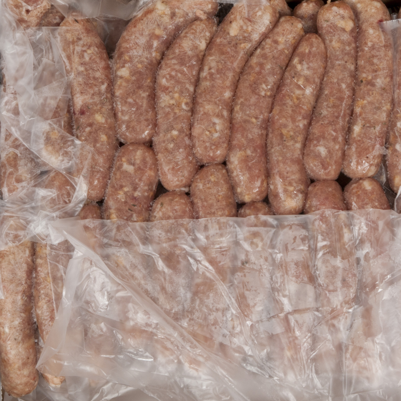
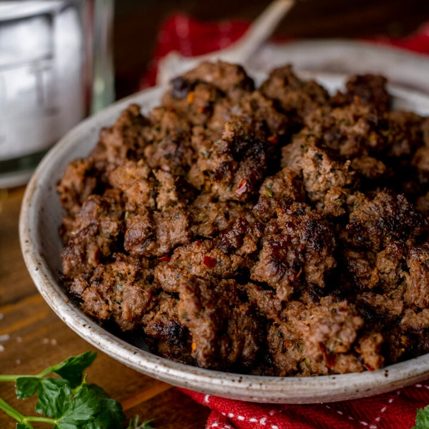

Welcome to our Homemade Sausage Making Guide!
If you're a sausage enthusiast, you're in the right place. Making sausages at home can be a rewarding and delicious experience. Here, we'll guide you through the process step by step.
Ingredients
- Fresh meat (pork, beef, chicken, or a mix)
- Spices and seasonings
- Casings (natural or synthetic)
Instructions
- Prepare the meat by trimming excess fat and cutting it into small chunks.
- Season the meat with your choice of spices and seasonings. Mix well.
- Soak the casings in water to soften them.
- Attach a sausage stuffing attachment to your meat grinder or sausage stuffer.
- Feed the seasoned meat mixture into the grinder or stuffer and stuff it into the casings.
- Tie off the sausages at regular intervals and twist them to create individual links.
- Refrigerate the sausages for a few hours or overnight to let the flavors meld.
- Cook and enjoy your homemade sausages!
Tips and Tricks
- Experiment with different spices and flavors to create unique sausage blends.
- Use a meat thermometer to ensure your sausages are cooked to a safe temperature.
- Store any leftover sausages in the refrigerator or freezer for later use.
Gallery
Here are some mouth-watering images of homemade sausages:

